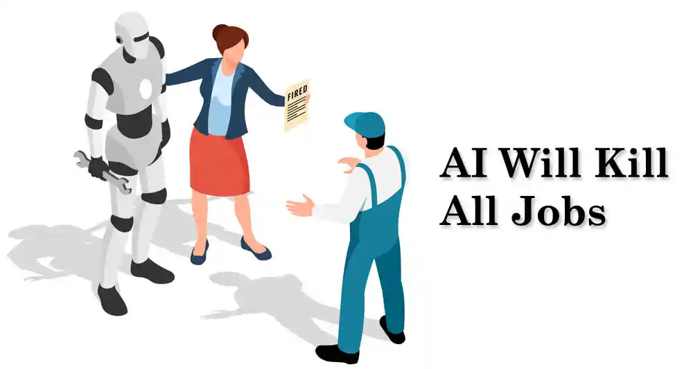

Unveiling the Truth Behind AI's Impact on Employment

Introduction
In an era of rapid technological advancements, Artificial Intelligence (AI) has emerged as a double-edged sword, captivating minds with its potential to reshape industries and improve lives. However, a burning question looms over the horizon: Is AI truly a harbinger of job destruction, or does it hold the key to unlocking new opportunities and economic growth? Today, we unveil the truth behind the AI revolution and its implications for the workforce.
"Are robots taking over your job? The rise of Artificial Intelligence has ignited fears and speculation about an impending job apocalypse. Brace yourself as we unravel the reality and dispel the myths surrounding this global phenomenon."
The AI Revolution Unveiled
Captivating readers with a glimpse into the world of AI and its transformative power.
Debunking common misconceptions about AI's capabilities and limitations.
Setting the stage for a balanced exploration of its impact on employment.
Job Displacement vs. Job Transformation
Grabbing attention by diving into the heated debate: Will AI replace human workers?
Presenting case studies and evidence showcasing historical technological advancements and their impact on job markets.
Highlighting how AI's disruptive nature can reshape job roles and foster new opportunities.
The Augmented Workforce of the Future
Intriguing readers with the concept of an "augmented workforce" where humans and AI collaborate seamlessly.
Discussing how AI can enhance human productivity, decision-making, and creativity.
Emphasizing the importance of upskilling and reskilling to thrive in an AI-driven world.
In this era of AI-driven disruption, sensationalist headlines may try to instill fear, but the reality is far more nuanced. The impact of AI on jobs is not a story of annihilation but rather one of transformation and untapped potential. By embracing the AI-driven future, acquiring new skills, and fostering collaboration between humans and machines, we can shape a world where technology empowers us to reach new heights. Will you seize the opportunity or be left behind?